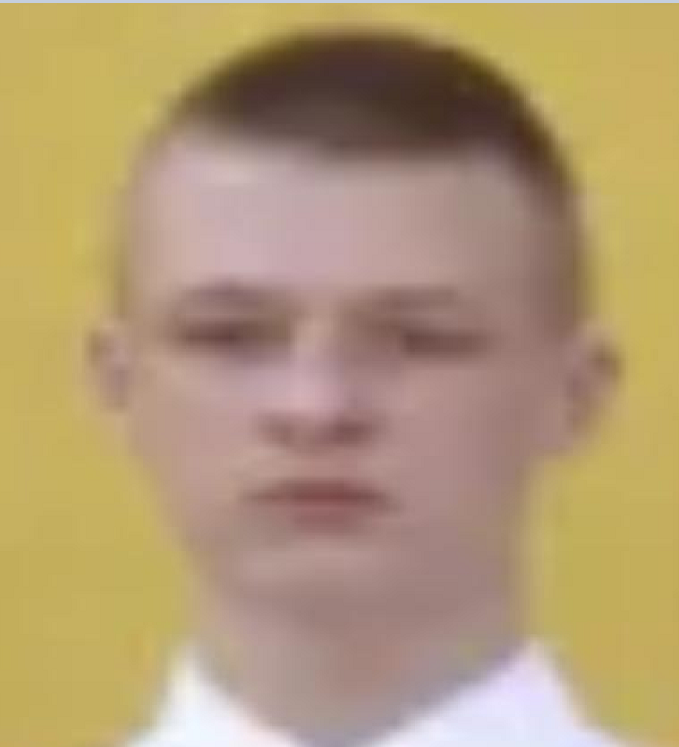

Katona Zalán
Szoftverfejlesztő és tesztelő
Elérhetőség és adatok
- Születési hely, idő: 3000 Hatvan, 2006.08.16
- Lakhely: 3011 Heréd Rákóczi Ferenc út 98.
- Telefonszám: +3630 632 6900
- E-mail: katonazalan816@gmail.com
Tanulmányok
2021-2025 | VSzC Petőfi Sándor Műszaki Technikum, Gimnázium és Kollégium
Szoftverfejlesztő és tesztelő technikus
2013-2021 | Herédi Általános Iskola
Nyelvi ismeretek
Magyar | C2
Angol| C2